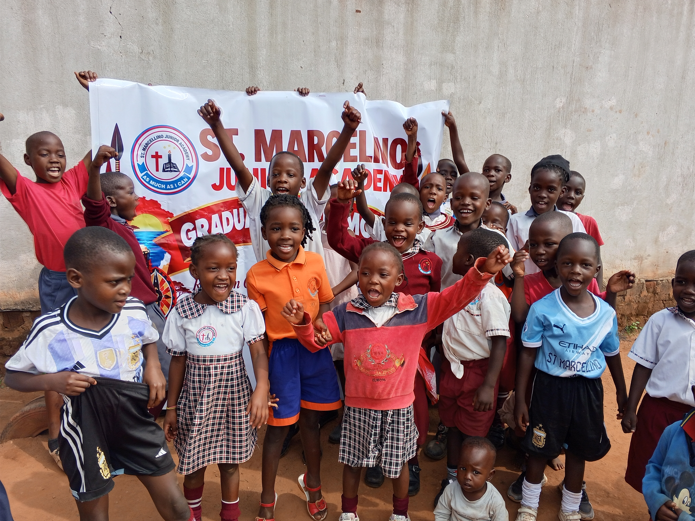

Pupils gathered beneath the St. Marcellino Junior Academy banner to celebrate a memorable school occasion. The photos capture children sharing the moment with classmates and friends.
School milestones are a chance to recognise children's growth and bring the school community together. These snapshots preserve a little of the excitement and pride of the day.
Memories from the celebration


